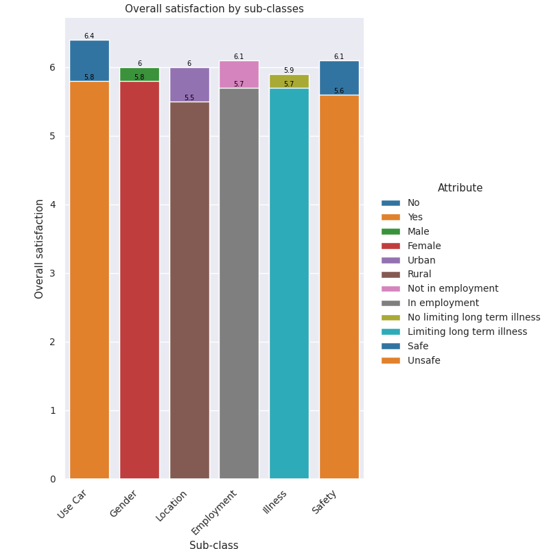
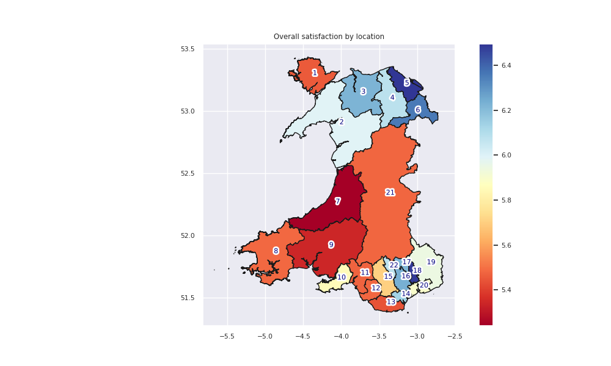

The future of the data scientist
The necessity of handling increasingly large volumes of data, and understanding its complexities, is causing professionals with backgrounds in data science to turn to this discipline. For example, earth science and remote sensing specialists are taking steps to improve their knowledge in statistics, math, and programming. The idea is that by learning data science they can better perform their tasks. That is, they take advantage of the range of techniques to support sophisticated reasoning across space and time, like clustering, propagation, and extrapolation methods. Also, by using data science they can optimize the integration of data and models that operate at different spatial and temporal scales (Anon, 2010), which are very common in environmental sciences.
For example, large volumes of data are collected via remote sensing where environmental phenomena are observed without contact with the phenomena, typically from satellite sensing or aircraft-borne sensing devices, including the use of drones. This includes passive sensing, such as photography or infrared imagery, and active sensing, e.g., RADAR/LIDAR. The increasing availability of open satellite data, in particular, is a major trend in earth and environmental sciences, such as, the EU Copernicus program and the associated Sentinel missions, or NASA's Landsat archive are regularly mined for data for various applications(Langley et al., 2016). So data science has a profound impact on wide range of activities (Dhar, 2013).
In the future, environmental data scientists will have many opportunities to work because all companies are interested in automatizing their processes and solving environmental problems like climate change using data from different sources. (Saxena, 2021) stated this by saying that “It is true that companies will keep focusing on the automated workflow of machine learning. But, remember, no company wants to depend on another company for their work” for that in the future all businesses will have a big team of data scientist while data scientist will need training all time due to that all time has new techniques to processes and analyze the data. Alternatively, (Yıldırım, 2021) refers that becoming a data scientist is not necessary to obtain all these skills. However, if the data scientist improves all these skills, it will increase the opportunities to work like an environmental data scientist.
References:
Dhar, V. (2013) Data science and prediction. Communications of the ACM. 56 (12), 64–73. doi:10.1145/2500499.
A.E. Gelfand, P. Diggle, P. Guttorp, & M. Fuentes (eds.) (2010) Handbook of Spatial Statistics. Boca Raton, CRC Press. doi:10.1201/9781420072884.
Langley, E.S., Leeson, A.A., Stokes, C.R. & Jamieson, S.S.R. (2016) Seasonal evolution of supraglacial lakes on an East Antarctic outlet glacier. Geophysical Research Letters. 43 (16), 8563–8571. doi:10.1002/2016GL069511.
Saxena, P. (2021) There Will be a Shortage Of Data Science Jobs in the Next 5 Years? 12 August 2021. Medium. https://towardsdatascience.com/there-will-be-a-shortage-of-data-science-jobs-in-the-next-5-years-9f783737ed23 [Accessed: 9 February 2023].
Yıldırım, S. (2021) The Dark Side of the Sexiest Job of the 21st Century. 30 January 2021. Medium. https://towardsdatascience.com/the-dark-side-of-the-sexiest-job-of-the-21st-century-fd9c46bf4cae [Accessed: 9 February 2023].
Data protection for RPS
When reading the data protection for RPS. They are practicing a method that was discussed in Unit 3 of this course known as Master Data Management (MDM). First, the organization collects and processes personal data. They collect your name, address, and contact details, including email addresses and telephone numbers and any other personal information provide to the organization. Information may be shared with the following parties: Managers, sales teams, and third parties to whom they choose to sell, transfer, or merge parts of their business. Data will be stored in a range of different places within the organization's IT systems (including the organization's email system). The data may be transferred to the European Economic Area. They keep your personal data for the period necessary to fulfill the purposes for which it has been collected and to comply with their legal obligations. Once this data is no longer required, they will retain and securely destroy your personal information in accordance with applicable laws and regulations (RPS, 2018).
The negative aspect of the organization is about the archive and destroying the data. They do not specify how many years they will keep the data or if they will reuse the data for different purposes. Also, they do not specify for which organization they maybe sell the data. They will need to improve storage limitations. (EU, 2016) stated this by saying that personal data may be stored for longer periods insofar as the personal data will be processed solely for archiving purposes in the public interest, scientific or historical research purposes, or statistical purposes in accordance with Article 89 (EU, 2015). In general, much of consumers’ data is still being collected and used in ways to which they haven’t agreed. Lengthy steps still need to be taken and, ultimately, The Data Protection Regulation has not been the final answer to online personal security. (insightsoftware, 2018).
References:
EU (2015) Directive (EU) 2015/1535 of the European Parliament and of the Council of 9 September 2015 laying down a procedure for the provision of information in the field of technical regulations and of rules on Information Society services (codification) (Text with EEA relevance). OJ L.241. http://data.europa.eu/eli/dir/2015/1535/oj/eng.
EU (2016) Regulation (EU) 2016/679 of the European Parliament and of the Council of 27 April 2016 on the protection of natural persons with regard to the processing of personal data and on the free movement of such data, and repealing Directive 95/46/EC (General Data Protection Regulation) (Text with EEA relevance). http://data.europa.eu/eli/reg/2016/679/2016-05-04/eng.
insightsoftware (2018) GDPR – The Good, the Bad & the Ugly. 5 November 2018. insightsoftware. https://insightsoftware.com/blog/gdpr-the-good-the-bad-the-ugly/ [Accessed: 10 March 2023].
RPS (2018) Privacy | RPS. 9 May 2018. https://www.rpsgroup.com/privacy/ [Accessed: 10 March 2023].
Transport for Wales survey dataset
Figure shows the satisfaction score through all the dataset sub-classes. From Figure 1 The range of variation of the satisfaction score over all sub-classes is narrow, with values between 5.5 and 6.4. The least satisfied customers are from rural areas, which score a value of 5.5, and the most satisfied are customers that do not use a car, with a 6.4 score.
The “use car “ column indicates that customers that do not use a car are remarkably more satisfied than those that use a car. The “Yes” and “No” instances report satisfaction scores of 6.1 and 5.8 respectively. This is the widest gap between instances of Figure 1, meaning that car owners are perceivably unhappy about the public transport system.
Male and Female customers report similar satisfaction scores, with males being slightly more positive (6.0) than female (5.8). The narrow gap between instances indicates that both male and female undergo similar experiences in the system, and there are not gender-specific factors affecting their satisfaction with the transportation service.
The Urban customers report a score of 6.0, and rural customers are visibly more unsatisfied, with a score of only 5.5. The location sub-class shows the second largest disparity between customer scores, plus the 5.5 score by rural customers is the lowest of the whole dataset. This indicates there are big challenges for the transportation system in these areas.
Employment does also seem to be a factor in the satisfaction score. Customers that are not employed have a larger satisfactions score (6.1) than those employed (5.7). This is a considerably large gap between instances which requires more understanding.
Illness instances do not considerably change the satisfaction score. Both customers with no-limiting and limiting long-term illnesses do have similar satisfactions scores of 5.9 and 6.7 respectively.
Safety is another factor that considerably affect the satisfaction score. Customers that do report feeling unsafe have a score of 5.6, and those that report feeling safe have a score of 6.1.
Overall satisfaction by location
The locations with the least satisfaction are Ceredigion, Carmarthenshire, and The Vale of Glamorgan, with 5.2, 5.3 and 5.4 respectively. On the other hand, the locations with the most satisfaction score are Wrexham, Torfaen, and Flintshire, which have value of 6.4, 6.5, and 6.5 respectively.
There are two patches with high satisfaction scores. One in the north, around Flintshire. And the other one in the south, around Torfaen. The rest of the territory has satisfaction scores between low and medium ( 5.2 and 6.0).
Conclusions and recommendations
In general, the overall satisfaction is homogeneous across sub-classes with few extreme low values for rural customers, and customers that feel unsafe using the service. This means that most of the customers are facing the same challenges while using the service.
As recommendation, it should be conducted diagnostic of the transportation services and link it with the customers satisfaction. Because the current survey only focuses on costumers attributes and satisfaction, but not on the problems of the service and how these are perceived by the customers.